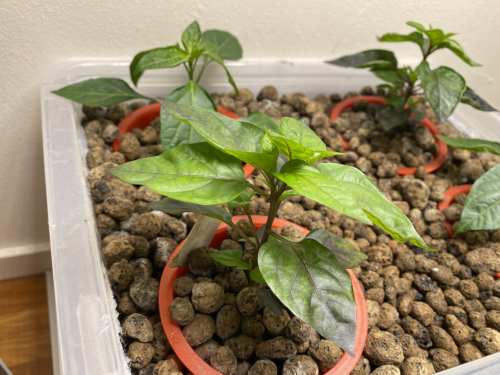
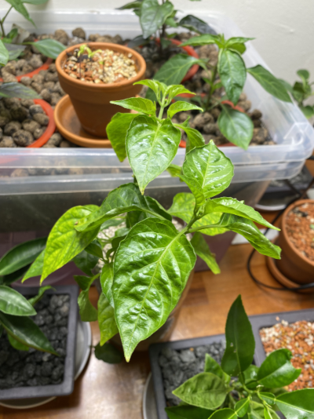

Ebb and Flow
I built an ebb and flow hydroponics system for chilies from storage boxes and an old aquarium pump. It has a 20 liter box as a reservoir and a 10 liter box as a flood tray. Ideally the containers should not be clear to limit algae growth in water but I haven’t had any problems yet and I like to look at the inner workings. I filled the flood tray with hydroton clay balls to retain moisture and shield the roots from light.
{kind=link}
The flood tray has a hole drilled for the silicone hose connected to the water pump. I didn’t seal the inlet hose with silicone because it is a tight fit and I wanted it to be easily taken apart for future maintenance and alterations. Instead of an overflow pipe I cut holes in the sides and glued some mesh over them with aquarium silicone. The holes are large enough to stop any overflow and won’t be plugged by the hydroton balls. The pump has 300l/h capacity and currently pumps the fertilizer solution to the flood tray twice a day.
{kind=link}
I sowed three types of chilies. Bolivian Rainbow(C. Annuum), Numex Twilight(C. Annuum) and Cabai Burung Ungu(C. Frutescens). Both of the annuums had 100% germination rate but neither of the frutescens seeds have germinated yet. They were under grow lights in about 27°C and high humidity and germinated in about two weeks. The hydroponics system could also be used for rooting cuttings and that will probably be a future project. You can place a lot of cuttings in a system of this size if you transplant them after rooting.
{kind=link}
After germination I moved the seedlings to rockwool and moved them to the ebb and flow system. I should have germinated them in the rockwool from the beginnig but I bought the rockwool cubes after germination. Next time I could try germinating them in rockwool and the ebb and flow system from the beginning. They are under a 100w LED grow light with around 14 hours of light and two floods a day. They seem to grow quite well in this system.
{kind=link}
 Three weeks after germination the chilies are growing very vigorously. I expect to see very fast growth in the coming weeks and months. If they continue to grow at this rate, soon I will have a problem with space. The species in the ebb and flow system are small ornamental species so they shouldn’t grow extremely large. My original idea for this project was to grow chili trees fast in the hydro to cut them down for chili bonsai but I’ll probably also get a decent amount of fruit.
{kind=link}
Passive Hydro
While waiting for the seeds to germinate for the ebb and flow system I decided to try a passive wicking hydroponics system. I cut a two liter bottle in half and turned the top upside down, stuffed the bottleneck with cheesecloth and filled the top with perlite. I then took an orange habanero(C. Chinense) from the greenhouse, washed the compost from the roots and planted it in the perlite. Last step was to fill the bottom with fertilizer solution and then put it under grow lights. Because the bottle is clear it has some algae growth. The solution to this would be to paint the plastic with spray paint or wrap it in duct tape but I don’t mind a little algae.
{kind=link}
 The habanero plant is still alive three weeks after planting in the passive hydro. It had some leaf yellowing and drop in the lower leaves probably from minor underwatering. It has since acclimated and grown lots of roots and has grown new green leaves. I have picked off lots of flower buds to encourage new growth before flowering and fruiting. It should lead to a bigger harvest because a bigger plant produces more fruit and they don’t grow much during flowering. I expect the habanero to grow slower in the passive system than the chilies in the active ebb and flow system.
{kind=link}